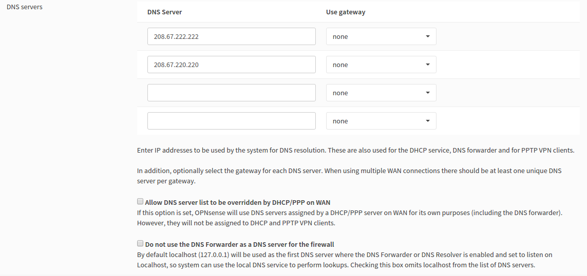
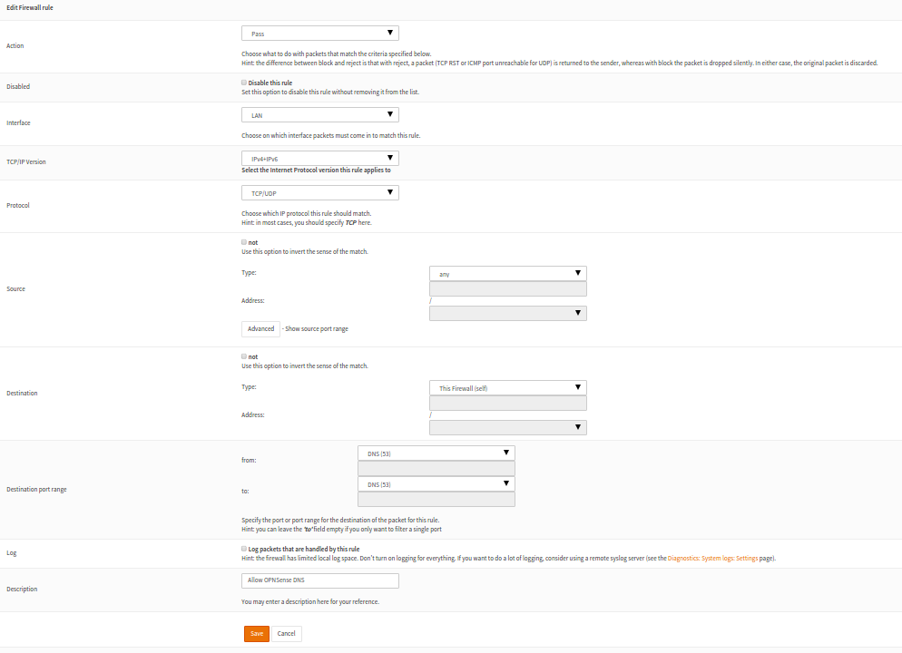

Using OpenDNS with OPNSense
I've been running OPNSense as my firewall for a few months now. I really dig it. I switched from PFSense, which I had been running for a couple of weeks at the time. Prior to that I was using my Apple AirPort Extreme as my firewall / router.
With the switch away from the consumer grade firewall / router, I really reveled in the expanded control that I got. In particular, I really enjoyed the easy set up of an OpenVPN back into my home network. I could not do any of that stuff with the AirPort extreme as easily as I did with OPNSense.
However, there was always one thing that had been very easy to get working with the Airport Extreme that I could never seem to get quite right: OpenDNS. Today, with the help of PiBa-NL in the #OPNSense IRC room on Freenode, I finally got it all sorted out.
Disclaimers, asumptions, and dependencies
Before I get too far into this, I need to issue a disclaimer. OPNSense is a product that is under development, so sometimes things move around pretty quickly. I'm currently on OPNsense 15.7.4-amd64 that is running on a FreeBSD 10.1-RELEASE-p14 base with OpenSSL 1.0.2d 9 Jul 2015 doing the SSL work. I would suspect, but cannot guarantee, that what you are about to read below will work for any OPNSense 15.7 version.
I'm going to assume that you have an OpenDNS account, and that you have a basic understanding of how DNS works in general. Without these things, this may not make too much sense right now.
Lastly, I'm going to use 192.168.1.1 as the IP address to represent the OPNSense firewall. You should replace that IP address with whatever IP address or hostname is appropriate for your configuration.
Setting up your OpenDNS account in OPNSense
The first step is configuring OPNSense with your OpenDNS credentials. In the OPNSense UI, you can get there via Services → DNS Filter, or you can go there directly with https://192.168.1.1/services_opendns.php. You'll want to tick the box to enable OpenDNS, and enter your username, password, and the name of your network as it appears in the OpenDNS setings.
When you have everything entered, hit Save for good measure, and then hit the Test/Update button. You should receive feedback that your test has passed.

What you should see in place of the smudged out parts up there are your e-mail address from OpenDNS and your IP address.
At this point, I assumed (apparently incorrectly), that by entering my OpenDNS credentials, that OPNSense would magically suck down the OpenDNS settings, and set everything up for me. It doesn't appear to have done that. Which leads us to ...
Adding the OpenDNS name servers
In OPNSense, browse to System → Settings, or https://192.168.1.1/system_general.php. Scroll down to the DNS Servers section, and wipe out any DNS servers that may be configured in there. Replace them with the OpenDNS name servers, which, at the time this article was written, are 208.67.222.222 and 208.67.220.220. The Gateway should be set to None.

Turning off the DHCP Override
As I was trying to get all of this set up, I spent a lot of time in the forums. I found a thread that seemed to have some answers even though it was for a much older version of OPNSense -- it was before the DNS Filter options were added. This thread inidcated that in order to get OpenDNS working properly, you would need to have the "Allow DNS server list to be overridden by DHCP/PPP on WAN" option checked. It didn't make sense to me, since it very clearly states that with that option checked, the DNS servers your ISP provides are what would be used for lookups.
Honestly, I think that my issue all along was that I didn't do the OpenDNS name servers manually, as we just did. This meant that when I would uncheck that box, I would lose all of my name resolution.
The TL;DR here is that "Allow DNS server list to be overridden by DHCP/PPP on WAN" should be unchecked.
The very next checkbox -- "Do not use the DNS Forwarder as a DNS server for the firewall" -- is completely up to you. If you check the box, the OPNSense will use itself as the first name server when it is doing lookups. I have it unchecked, but it should be fine either way.
In the end, your DNS settings should look very similar to what you see below.

Other DNS Settings
There are a couple of other DNS services that OPNSense includes that could possibly interefere with your OpenDNS success.
The first is DNS Forwarder. You'll want to verify that DNS Forwarder in enabled. You can do that by browsing to Services → DNS Forwarder (or https://192.168.1.1/services_dnsmasq.php) and making sure that the box to enable the service is checked. If it not checked, then check it and press save.
The second is DNS Respolver. This service should be disabled, from everything I can tell. If it is enabled, then it probably means that at some point you have tried to build some sort of DNS server for use inside your network. Unchecking it will disable this service. It does seem as if this should be able to be running and still work with OpenDNS, but I, so far, haven't had any luck with it. I'm going to continue to play with, because I would love to have internal DNS working. For now, I'm leaving it off.
DHCP Settings
The final thing that tripped me up at one point was that I had tried to hand out the IP address of my OPNSense firewall inside my DHCP settings. I'm still not sure why this didn't work, but it didn't. Inside DHCP Server settings (https://192.168.1.1/services_dhcp.php), the DNS servers are completely empty. With DHCP Server configued this way, OPNSense will automatically hand itself out as the DNS server for all of the clients to use.
Wrapping it all up
Once I had everything configured and apparently working, the final step was to reboot OPNSense and test again. After a reboot, I disabled and re-enabled the network on my laptop, causing myself to grab a new IP address. I opened up my testing browser, and went to Internet Bad Guys and was informed that the site was being blocked by OpenDNS.
Success!!
Some gravy
Once I had it all working, I decided to tackle one additional problem. The backstory to this problem harkens to when I was using the AirPort Extreme as my edge network device. Even though I was using OpenDNS, it was dead simple to get around. All anyone needed to do was to reconfigure their DNS settings on their computer, and OpenDNS was rendered moot.
Luckily, now that I have a proper firewall running again, I can fix that with some OB traffic filtering. My network is pretty simple (right now) -- everything runs on a single /24 subnet. It is all switched, and then goes out to the Internet via OPNSense and finally my cable modem. I also have several FreeBSD jails running internally, and one of those jails is an additional DNS Server. All of the other jails use this internal DNS server for DNS. This lets me configure them to talk to each other via hostname, rather than IP address.
With that, I knew that what I needed to do was block requests on port 53 that were coming from my LAN, and not destined for my OPNSense, or coming from the other internal DNS server. Seems like it should be pretty easy.
Adding OB DNS Filtering rules
Back in OPNSense, go to Firewall → Rules (https://192.168.1.1/firewall_rules.php). Click on the LAN tab. You should see a couple of default rules that allow all LAN traffic to get everywhere. Since OPNSense is a first match firewall, we need the more specific rules at the top, and the more general rules at the bottom. Luckily, they make it pretty simple to move the rules around.
I used the lowest most plus (+) sign to add my rules, which put them at the bottom of the list. That's OK for now, we'll move them where they need to be right before we apply them.
Rule 1: Allow OPNSense DNS traffic.

This is a pass rule, which means we want to allow a specific bit of traffic to get through. The selected interface should be LAN (or whatever you call your internal network). I selected IPv4 & IPv6 for my TCP/IP versions. My ISP is handing out IPv6 IPs these days, so I figure it is best to be safe. Even though DNS mostly happens over UDP, there are times when it will be TCP, so selecting both protocols is the safest bet.
Leaving the source to "Any" is a safe bet, since this rule is looking for traffic on the LAN interface. For the destination, OPNSense gives you a nice option for "This Firewall (self)" which saves us from having to create 2 rules -- one for IPv4 and one for IPv6. Obviosuly the destination port should be set to 53.
I've opted to not log this activity, since it should be traffic that is allowed. I'm not generally interested in tracking allowed traffic.
Click Save to put the rule in the list. For the time being, it will be at the bottom of the list. That's OK.
Optional Rule 2: Allow another internal DNS server to make DNS queries

This rule is very similar to the first. The changes that the keen eye will notice are:
- This rule only applies to IPv4. My internal traffic doesn't use IPv6 (yet), so for now I'm only dealing with v4 traffic.
- The source for this rule is set to a specific IP address. This is the IP address of that other DNS server that I have in place for my FreeBSD jails.
- The destination type is "Any". I want that server to be able to make DNS requests as it needs. It is unfettered.
Once again, save to create the rule.
Rule 3: Deny any DNS traffic that comes in on the LAN interface.

This rule is a block rule that is also applied to the LAN interface. It is also set to match on IPv4 & IPv6 and on TCP & UDP. The Source type is "Any", with no port restriction. The destination type is also "Any", with a destination port of 53.
Fixing the order, and putting it into effect
In order to shuffle the rules around, you can check the box for the 3 rules that were just added. Then, to the right of the topmost rule, there will be an icon with a arrow in it pointing to the left. If you hover over that, you'll see the hint "move selected rules before this rule". When you click that icon for the uppermost rules, your firewall rules should change in order to look something like what you see below.

Once everything is in the right order, you should be able to apply the changes. When it is done, you can test:
$ host www.kirkg.us www.kirkg.us has address 104.24.125.230 www.kirkg.us has IPv6 address 2400:cb00:2048:1::6818:7de6 $ host www.kirkg.us 8.8.8.8 ;; connection timed out; no servers could be reached
A brief explanation
The hint at the bottom of the firewall rules page explains everyting -- the rules are processed in order, from top down. This means that the most specific rules should be at the top, and the more generic rules are the bottom. In the screesnhot above, you see that the bottom 2 rules are the catch-all "allow anything" rules. The same theory can be applied to subsets of rules, which is to say rules that pertain to a certain type of traffic. In this case DNS. If you look at the 3 rules that we created today, you'll see that the most generic rule (Rule 3: Block all DNS traffic), is under the more specific rules 1 & 2, which are designed to allow DNS traffic for specific hosts.
What all of this means is that if one of your clients types in www.kirkg.us in their browser, the DNS request will come to your OPNSense box, and match on the first DNS rule. The traffic will be allowed, and everyone will be happy.
On the other hand, if someone is trying to get around your OpenDNS filtering, and has changed their computer's DNS settings to use a public DNS server they will get denied. If , for example, they have used 8.8.8.8 as their DNS server, and their computer attempts to make the lookup for www.kirkg.us, the traffic will come in on the LAN interface. It doesn't match rule #1, since it is not destined for the OPNSense box. It also won't match the 2nd rule, since the traffic is not originating from your other internal DNS server. It will match on the 3rd rule, since it is destined for port 53. Since rule 3 is a block rule, the traffic will be logged (if you have so chosen), and then discarded. The dastardly user will most likely get an unfriendly message from the web browser and will be thwarted.
A tiny hole
There is still one hole in the logic. Did you spot it? If the aforementioned dastardly user knows that you have another DNS server running internally, they can configure their computer to use that as their DNS server, and they will effectivly circumvent your OpenDNS filtering.
That is an acceptable risk, for me, for now. If it isn't for you, then you should definitely disable the 2nd rule.
by Kirk Gleason